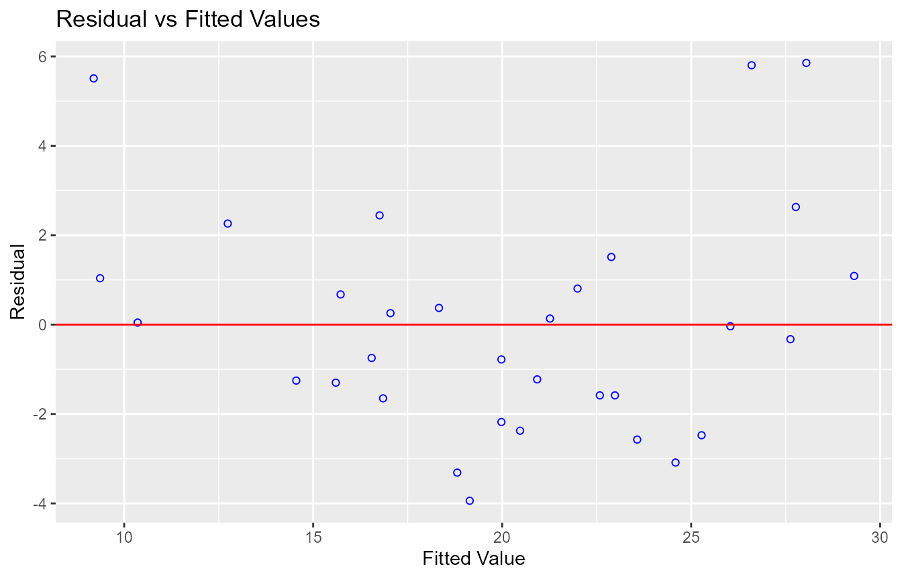

Can weight and horsepower explain fuel economy?
Source:vignettes/getting-started.Rmd
getting-started.RmdCan we describe fuel economy using a car’s weight and horsepower? We will fit one model, read its coefficients and inspect what it misses. In these data, heavier cars and cars with more horsepower tend to have lower fuel economy, after accounting for the other predictor. The model describes about 83% of the observed variation, but several cars still have sizable residuals.
Understand the data
Example data: R’s built-in mtcars dataset
The data contain 32 cars from a motor magazine’s road tests. Fuel
economy (mpg) is measured in miles per US gallon, weight
(wt) in thousands of pounds and engine power
(hp) in gross horsepower. Each row is a car; the row names
retain its model name. These are observational measurements, so
associations between the variables do not establish what a weight or
engine change would cause for a particular car.
library(olsrr)
car_data <- datasets::mtcars[c("mpg", "wt", "hp")]
stopifnot(nrow(car_data) == 32L, !anyNA(car_data))
head(car_data)
#> mpg wt hp
#> Mazda RX4 21.0 2.620 110
#> Mazda RX4 Wag 21.0 2.875 110
#> Datsun 710 22.8 2.320 93
#> Hornet 4 Drive 21.4 3.215 110
#> Hornet Sportabout 18.7 3.440 175
#> Valiant 18.1 3.460 105We check the three columns we will actually use. None is missing, so every calculation below refers to the same 32 cars. When adapting this example, decide how to handle missing measurements before comparing results: a change in the rows can also change the apparent fit.
Fit once and read the result
Use R’s lm() to specify the response on the left of
~ and the two predictors on the right. Adding
wt and hp gives each predictor its own
straight-line contribution; this formula does not include an
interaction. The fitted object keeps the model and observations together
for the following steps.
fuel_model <- lm(mpg ~ wt + hp, data = car_data)
ols_regress(fuel_model)
#> Model Summary
#> ---------------------------------------------------------------
#> R 0.909 RMSE 2.593
#> R-Squared 0.827 MSE 6.726
#> Adj. R-Squared 0.815 Coef. Var 12.909
#> Pred R-Squared 0.781 AIC 156.652
#> MAE 1.901 SBC 162.515
#> ---------------------------------------------------------------
#> RMSE: Root Mean Square Error
#> MSE: Mean Square Error
#> MAE: Mean Absolute Error
#> AIC: Akaike Information Criteria
#> SBC: Schwarz Bayesian Criteria
#>
#> ANOVA
#> ----------------------------------------------------------------------
#> Sum of
#> Squares DF Mean Square F Sig.
#> ----------------------------------------------------------------------
#> Regression 930.999 2 465.500 69.211 < 0.0001
#> Residual 195.048 29 6.726
#> Total 1126.047 31
#> ----------------------------------------------------------------------
#>
#> Parameter Estimates
#> -------------------------------------------------------------------------------------------
#> model Beta Std. Error Std. Beta t Sig lower upper
#> -------------------------------------------------------------------------------------------
#> (Intercept) 37.227 1.599 23.285 < 0.0001 33.957 40.497
#> wt -3.878 0.633 -0.630 -6.129 < 0.0001 -5.172 -2.584
#> hp -0.032 0.009 -0.361 -3.519 0.0015 -0.050 -0.013
#> -------------------------------------------------------------------------------------------Read the Beta column in the response’s units. Holding horsepower fixed, an additional 1,000 pounds is associated with about 3.88 fewer miles per gallon. Holding weight fixed, an additional horsepower is associated with about 0.032 fewer miles per gallon, or 0.32 fewer for ten horsepower. These are comparisons within the fitted model, rather than two separate regressions or instructions for modifying a vehicle.
The lower and upper columns give 95% confidence intervals under the usual model assumptions. For weight the interval is about -5.17 to -2.58 mpg per 1,000 pounds. It expresses uncertainty about the conditional slope; it is not a range containing 95% of cars. The intercept describes a car with zero weight and zero horsepower, outside this sample’s useful range.
Inspect what remains unexplained
A residual is observed fuel economy minus the model’s fitted fuel economy. A positive residual means the car used less fuel per mile than the model suggested, because its observed mpg was higher. Plotting residuals against fitted values helps reveal patterns hidden by the regression table.
residual_plot <- ols_plot_resid_fit(fuel_model, print_plot = FALSE)
residual_plot
Fuel-economy residuals for the 32 mtcars observations, in miles per US gallon.
Several residuals are above five mpg, and the high fitted values
include large positive residuals. This is reason to investigate the
shape of the relationship and the individual cars. A high R-squared
alone does not show that the straight-line mean or the uncertainty
calculations are adequate. The plot also does not establish independence
between observations. Here print_plot = FALSE returns a
ggplot directly, which we then print; other plotting functions can
return lists, so check their individual help.
Put the fit in perspective
performance <- ols_model_performance(fuel_model)
knitr::kable(data.frame(
Measure = c("R-squared", "Adjusted R-squared", "Predicted R-squared", "RMSE (mpg)"),
Value = c(performance$rsq, performance$adjr, performance$prsq, performance$rmse)
), digits = 3, caption = "A compact performance summary for the same fuel-economy model.")| Measure | Value |
|---|---|
| R-squared | 0.827 |
| Adjusted R-squared | 0.815 |
| Predicted R-squared | 0.781 |
| RMSE (mpg) | 2.593 |
R-squared is 0.827: the fit accounts for about 83% of the sample variation in mpg around its mean. The residual RMSE is 2.593 mpg, a measure of the remaining scatter using the residual degrees of freedom. It is not a guaranteed error bound for an individual prediction. Predicted R-squared, 0.781, uses leave-one-out prediction errors; it gives a less optimistic view than training R-squared, but is not independent validation on new cars.
Next, learn to read a regression
table, then work through residual diagnostics to investigate
shape and spread. The function help for ols_regress(),
ols_plot_resid_fit()
and ols_model_performance()
describes their output and options. Start with that residual
investigation before using this model to make decisions about cars
outside the observed sample.